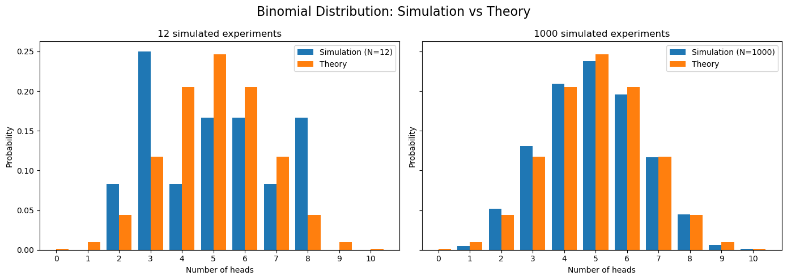
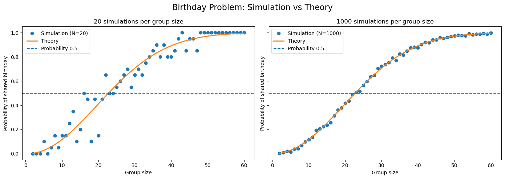
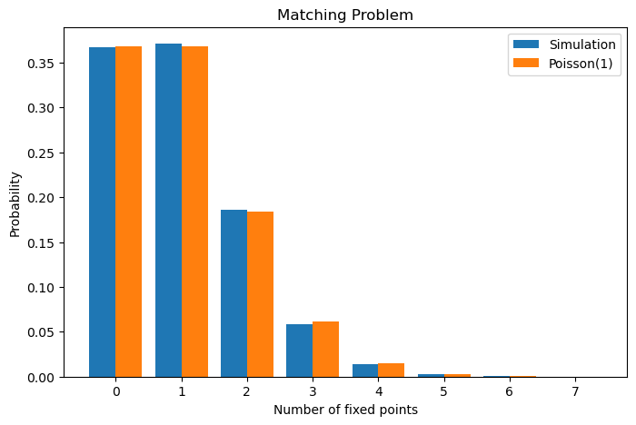
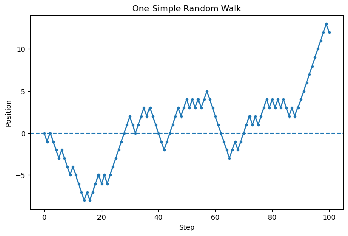
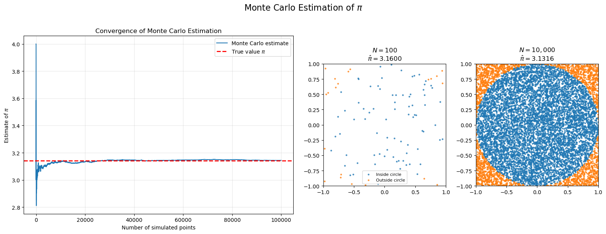
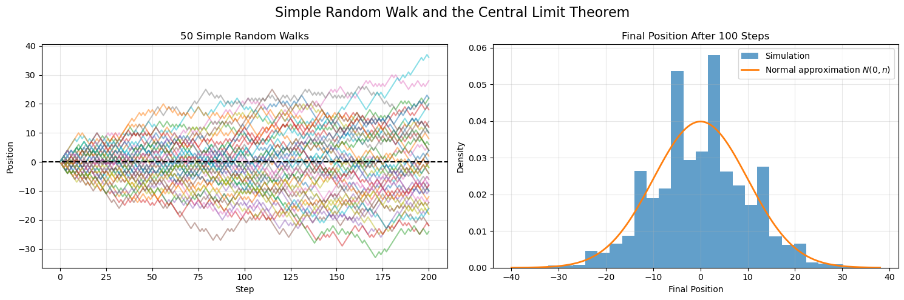

Suppose that a task can be performed in \(n_1\) ways or in \(n_2\) ways, and that the two possibilities are mutually exclusive. Then the total number of possible outcomes equals \(n_1+n_2\).
1.1.1 Example
A class consists of 15 boys and 12 girls. If we wish to choose a class representative, then the number of possible choices is
\[15+12=27.\]
1.2 Product Rule
Suppose that a procedure consists of \(k\) consecutive steps. If Step \(i\) can be performed in \(n_i\) ways for every \(i=1,\ldots,k\), then the total number of possible outcomes equals
\[n_1n_2\cdots n_k.\]
1.2.1 Example
A password consists of three letters followed by two digits. Since each letter can be chosen in 26 ways and each digit in 10 ways, the total number of possible passwords equals
\[26^3\cdot10^2\]
1.3 Pigeonhole Principle
If \(n+1\) objects are placed into \(n\) boxes, then at least one box must contain at least two objects.
1.3.1 Example
Among 13 people there are always at least two born in the same month. Indeed, the objects are the people and the boxes are the months of the year. Since \(13>12\), the conclusion follows immediately.
1.4 Counting Formulas
With Repetition
Without Repetition
Combinations
\(\displaystyle \binom{n+k-1}{k}\)
\(\displaystyle \binom{n}{k}\)
Arrangements
\(\displaystyle n^k\)
\(\displaystyle \frac{n!}{(n-k)!}\)
1.4.1 How Fast Do Binomial Coefficients Grow?
How large is the central binomial coefficient \(\binom{n}{\lfloor n/2\rfloor}\) for increasing values of n?
Show Python code
import numpy as npimport matplotlib.pyplot as pltfrom math import combn_values = np.arange(1, 101)central_binomials = np.array([ comb(n, n //2)for n in n_values], dtype=object)# Points to annotaten1 =20n2 =50y1 = comb(n1, n1 //2)y2 = comb(n2, n2 //2)fig, ax = plt.subplots(1, 2, figsize=(14, 5))# -----------------------------# Linear scale# -----------------------------ax[0].plot( n_values, [float(x) for x in central_binomials], marker="o", markersize=3)ax[0].scatter([n1, n2], [y1, y2], s=80)ax[0].annotate(rf"$\binom{{{n1}}}{{{n1//2}}}={y1:,}$", (n1, y1), xytext=(5, 20), textcoords="offset points")ax[0].annotate(rf"$\binom{{{n2}}}{{{n2//2}}}={y2:,}$", (n2, y2), xytext=(5, -25), textcoords="offset points")ax[0].set_title("Actual Values")ax[0].set_xlabel("$n$")ax[0].set_ylabel(r"$\binom{n}{\lfloor n/2\rfloor}$")ax[0].grid(alpha=0.3)# -----------------------------# Logarithmic scale# -----------------------------ax[1].plot( n_values, [float(x) for x in central_binomials], marker="o", markersize=3)ax[1].scatter([n1, n2], [y1, y2], s=80)ax[1].annotate(rf"$\binom{{{n1}}}{{{n1//2}}}$", (n1, y1), xytext=(5, 20), textcoords="offset points")ax[1].annotate(rf"$\binom{{{n2}}}{{{n2//2}}}$", (n2, y2), xytext=(5, -25), textcoords="offset points")ax[1].set_yscale("log")ax[1].set_title("Logarithmic Scale")ax[1].set_xlabel("$n$")ax[1].set_ylabel(r"$\binom{n}{\lfloor n/2\rfloor}$")ax[1].grid(alpha=0.3)plt.suptitle("Growth of the Central Binomial Coefficient", fontsize=16)plt.tight_layout()plt.show()print()print(f"C(20,10) = {y1:,}")print(f"C(50,25) = {y2:,}")print(f"C(100,50) = {comb(100,50):,}")
from math import log10n =100num_subsets =2**nprint(f"Number of subsets = {num_subsets:e}")print(f"log10(Number of subsets) = {log10(num_subsets):.2f}")
Number of subsets = 1.267651e+30
log10(Number of subsets) = 30.10
Even if a computer evaluated one billion feature subsets per second, it would still take much longer than the age of the universe to check them all.
Suppose that \(a_1,\ldots,a_N\) are objects and \(d_1,\ldots,d_n\) are properties.
Let \(N(d_i)\) denote the number of objects satisfying property \(d_i\), and let \(N(d_{i_1},\ldots,d_{i_k})\) denote the number of objects satisfying all properties \(d_{i_1},\ldots,d_{i_k}\) simultaneously.
Then the number of objects satisfying none of the properties is given by
Combinatorics tells us how many outcomes are possible. Probability tells us how likely they are.
Show Python code
#Coin Toss Simulationimport numpy as npimport matplotlib.pyplot as pltfrom math import combnp.random.seed(42)n =10p =0.5# Two different sample sizessample_sizes = [12, 1000]# Theoretical probabilitiesk_values = np.arange(n +1)theoretical_probs = np.array([ comb(n, k) * p**k * (1- p)**(n - k)for k in k_values])# Create two plots side by sidefig, axes = plt.subplots(1, 2, figsize=(14, 5), sharey=True)for ax, N inzip(axes, sample_sizes):# Simulate N experiments samples = np.random.binomial(n=n, p=p, size=N)# Empirical probabilities values, counts = np.unique(samples, return_counts=True) empirical_probs = counts / N ax.bar(values -0.2, empirical_probs, width=0.4, label=f"Simulation (N={N})") ax.bar(k_values +0.2, theoretical_probs, width=0.4, label="Theory") ax.set_xlabel("Number of heads") ax.set_ylabel("Probability") ax.set_title(f"{N} simulated experiments") ax.set_xticks(k_values) ax.legend()plt.suptitle("Binomial Distribution: Simulation vs Theory", fontsize=16)plt.tight_layout()plt.show()

Show Python code
# Birthday Problem Simulationimport numpy as npimport matplotlib.pyplot as pltnp.random.seed(42)def birthday_simulation(group_size, N): success =0for _ inrange(N): birthdays = np.random.randint(1, 366, size=group_size)iflen(set(birthdays)) < group_size: success +=1return success / Ngroup_sizes = np.arange(2, 61)# Theoretical probabilitiestheoretical_probs = []for n in group_sizes: prob_all_different =1.0for k inrange(n): prob_all_different *= (365- k) /365 theoretical_probs.append(1- prob_all_different)theoretical_probs = np.array(theoretical_probs)# Two different simulation sizessample_sizes = [20, 1000]# Create side-by-side plotsfig, axes = plt.subplots(1, 2, figsize=(14, 5), sharey=True)for ax, N inzip(axes, sample_sizes): empirical_probs = np.array([ birthday_simulation(n, N)for n in group_sizes ]) ax.plot(group_sizes, empirical_probs,"o", label=f"Simulation (N={N})") ax.plot(group_sizes, theoretical_probs, linewidth=2, label="Theory") ax.axhline(0.5, linestyle="--", label="Probability 0.5") ax.set_xlabel("Group size") ax.set_ylabel("Probability of shared birthday") ax.set_title(f"{N} simulations per group size") ax.legend()plt.suptitle("Birthday Problem: Simulation vs Theory", fontsize=16)plt.tight_layout()plt.show()

5 Monte Carlo Simulation
In many probability problems, obtaining an exact answer can be difficult or even impossible. A powerful alternative is to estimate probabilities using random experiments performed by a computer.
This approach is known as the Monte Carlo method.
5.1 Basic Idea
Suppose that we want to estimate the probability of an event \(A\).
If we repeat the experiment independently \(N\) times and observe that the event occurs \(M\) times, then
\[
P(A)\approx\frac{M}{N}.
\]
As \(N\) becomes large, this approximation becomes increasingly accurate.
This phenomenon is a consequence of the Law of Large Numbers, which states that the empirical frequency of an event converges to its true probability.
5.2 Why Does It Work?
Suppose that the true probability of an event is \(p\).
If we perform \(N\) independent experiments and count the number of successes \(M\), then
\[
\frac{M}{N}
\longrightarrow
p
\qquad\text{as}\qquad
N\to\infty.
\]
Thus, by generating enough random samples, we can estimate probabilities with arbitrary precision.
5.3 Example: Lucky Tram Tickets
A six-digit ticket is called lucky if the sum of its first three digits equals the sum of its last three digits. Computing the exact probability requires a nontrivial combinatorial argument.
Instead, we can estimate the probability by generating a large number of random tickets and checking how often the event occurs. For example, after simulating one million random tickets, we obtain
The simulation provides an excellent approximation.
Show Python code
import numpy as npimport matplotlib.pyplot as pltnp.random.seed(42)N =1_000_000# Generate N random six-digit ticketstickets = np.random.randint(0, 1_000_000, size=N)# Extract digitsd1 = tickets //100000d2 = (tickets //10000) %10d3 = (tickets //1000) %10d4 = (tickets //100) %10d5 = (tickets //10) %10d6 = tickets %10left_sum = d1 + d2 + d3right_sum = d4 + d5 + d6lucky = (left_sum == right_sum)estimated_probability = np.mean(lucky)print(f"Estimated probability = {estimated_probability:.6f}")print(f"Estimated number of lucky tickets = {estimated_probability*1_000_000:.0f}")
Estimated probability = 0.055233
Estimated number of lucky tickets = 55233
6 The Matching Problem
Suppose that \(n\) people check their coats at a restaurant.
At the end of the evening, the coats are returned completely at random.
Let \(X\) denote the number of people who receive their own coat.
Questions:
What is the expected value of \(X\)?
What is the probability that nobody receives their own coat?
What does the distribution of \(X\) look like for large \(n\)?
A permutation of the coats corresponds to a random assignment. A person receives their own coat if and only if they are a fixed point of the permutation. Thus, the event
\[
X=0
\]
corresponds exactly to a derangement. Therefore \(P(X=0)=
\frac{D_n}{n!}\).
Since \(D_n \sim \frac{n!}{e}\), we obtain
\[
P(X=0)
\to
\frac1e
\approx
0.3679.
\]
Surprisingly, even for very large groups there is still roughly a 37% chance that nobody gets their own coat.
Show Python code
# Simulation 1: Number of Fixed Pointsimport numpy as npimport matplotlib.pyplot as pltnp.random.seed(42)n =100N =1000fixed_points = []for _ inrange(N): perm = np.random.permutation(n) fixed_points.append( np.sum(perm == np.arange(n)) )fixed_points = np.array(fixed_points)print("Average number of fixed points:", fixed_points.mean())
Average number of fixed points: 0.993
The simulation suggests that the average number of people receiving their own coat is approximately
\[
E[X]=1.
\]
Remarkably, this is true for every value of \(n\).
Even if one thousand people check their coats, the expected number of correct matches is still exactly one.
Show Python code
# Simulation 2: Distribution of Fixed Pointsimport numpy as npimport matplotlib.pyplot as pltfrom scipy.stats import poissonnp.random.seed(42)n =100N =20000fixed_points = []for _ inrange(N): perm = np.random.permutation(n) fixed_points.append( np.sum(perm == np.arange(n)) )fixed_points = np.array(fixed_points)k = np.arange(0, 8)empirical = [ np.mean(fixed_points == i)for i in k]theoretical = poisson.pmf(k, mu=1)plt.figure(figsize=(8,5))plt.bar( k -0.2, empirical, width=0.4, label="Simulation")plt.bar( k +0.2, theoretical, width=0.4, label="Poisson(1)")plt.xlabel("Number of fixed points")plt.ylabel("Probability")plt.title("Matching Problem")plt.legend()plt.show()

The histogram is extremely close to a Poisson distribution with parameter \(\lambda=1\).
In fact, one can prove that
\[
X
\overset{d}{\longrightarrow}
\operatorname{Poisson}(1)
\qquad
(n\to\infty).
\]
As a consequence,
\[
P(X=0)
=
e^{-1}
\approx
0.3679,
\]
which explains why the probability of a derangement converges to \(1/e\).
7 Estimating \(\pi\) with Monte Carlo Simulation
Consider the square \([-1,1]\times[-1,1]\). Its area is \(4\). Inside the square, consider the unit disk
\[
x^2+y^2\leq 1.
\]
The area of the disk is \(\pi\). Therefore,
\[
\frac{\text{Area of disk}}
{\text{Area of square}}
=
\frac{\pi}{4}.
\]
If we generate points uniformly at random inside the square, then \(P\big((X,Y)\in \text{disk}\big)=\frac{\pi}{4}\).
Consequently,
\[
\pi
=
4P\big((X,Y)\in \text{disk}\big).
\]
Thus, we can estimate \(\pi\) by repeatedly generating random points and counting how many fall inside the disk.
Show Python code
import numpy as npimport matplotlib.pyplot as pltnp.random.seed(42)N =2000x = np.random.uniform(-1, 1, N)y = np.random.uniform(-1, 1, N)inside = x**2+ y**2<=1pi_hat =4* np.mean(inside)plt.figure(figsize=(6,6))plt.scatter( x[inside], y[inside], s=5, label="Inside disk")plt.scatter( x[~inside], y[~inside], s=5, label="Outside disk")plt.title(rf"Monte Carlo estimate: $\hat{{\pi}}={pi_hat:.4f}$")plt.axis("equal")plt.legend()plt.show()print("Estimate of pi:", pi_hat)

Estimate of pi: 3.14
As the number of simulated points increases, the estimate approaches the true value
\[
\pi\approx3.14159.
\]
This is another illustration of the Law of Large Numbers.
The Monte Carlo estimate becomes increasingly accurate as the sample size grows.
Show Python code
import numpy as npimport matplotlib.pyplot as plt# -----------------------------# Monte Carlo estimation of pi# -----------------------------np.random.seed(42)# Large simulation for convergenceN_conv =100_000x_conv = np.random.uniform(-1, 1, N_conv)y_conv = np.random.uniform(-1, 1, N_conv)inside_conv = x_conv**2+ y_conv**2<=1pi_estimates =4* np.cumsum(inside_conv) / np.arange(1, N_conv +1)# Simulations for visualizationsample_sizes = [100, 10_000]# -----------------------------# Create one figure# -----------------------------fig = plt.figure(figsize=(16, 6))# Grid layout:# left = convergence plot# right = two scatter plotsgs = fig.add_gridspec(1, 3, width_ratios=[2.2, 1, 1])# -----------------------------# Convergence plot# -----------------------------ax0 = fig.add_subplot(gs[0])ax0.plot( pi_estimates, lw=1.5, label="Monte Carlo estimate")ax0.axhline( np.pi, color="red", linestyle="--", linewidth=2, label=r"True value $\pi$")ax0.set_title("Convergence of Monte Carlo Estimation")ax0.set_xlabel("Number of simulated points")ax0.set_ylabel(r"Estimate of $\pi$")ax0.legend()ax0.grid(alpha=0.3)# -----------------------------# Scatter plots# -----------------------------for i, N inenumerate(sample_sizes): ax = fig.add_subplot(gs[i +1]) x = np.random.uniform(-1, 1, N) y = np.random.uniform(-1, 1, N) inside = x**2+ y**2<=1 pi_hat =4* np.mean(inside) ax.scatter( x[inside], y[inside], s=5, alpha=0.7, label="Inside circle" ) ax.scatter( x[~inside], y[~inside], s=5, alpha=0.7, label="Outside circle" ) ax.set_aspect("equal") ax.set_xlim(-1, 1) ax.set_ylim(-1, 1) ax.set_title(rf"$N={N:,}$"+"\n"+rf"$\hat{{\pi}}={pi_hat:.4f}$" )if i ==0: ax.legend(fontsize=8)# -----------------------------# Final formatting# -----------------------------fig.suptitle(r"Monte Carlo Estimation of $\pi$", fontsize=16, y=1.02)plt.tight_layout()plt.show()

8 Random Walk Simulation
A simple random walk starts at position \(0\).
At each step, the particle moves
one unit to the right with probability \(\frac12\);
one unit to the left with probability \(\frac12\).
If the steps are denoted by \(X_1,X_2,\ldots,X_n\), where each \(X_i\) is either \(+1\) or \(-1\), then the position after \(n\) steps is
\[
S_n=X_1+\cdots+X_n.
\]
This model appears in many areas:
gambling;
stock prices;
diffusion;
physics;
Markov chains;
stochastic processes.
The random walk is one of the simplest examples of a stochastic process.
Show Python code
# One Random Walkimport numpy as npimport matplotlib.pyplot as pltnp.random.seed(42)n_steps =100steps = np.random.choice([-1, 1], size=n_steps)position = np.cumsum(steps)position = np.insert(position, 0, 0)plt.figure(figsize=(8, 5))plt.plot(position, marker="o", markersize=3)plt.axhline(0, linestyle="--")plt.xlabel("Step")plt.ylabel("Position")plt.title("One Simple Random Walk")plt.show()
Show Python code
import numpy as npimport matplotlib.pyplot as pltfrom scipy.stats import norm# -----------------------------# Random Walk Simulation# -----------------------------np.random.seed(42)# Parameters for path visualizationn_steps_paths =200n_walks_paths =50steps_paths = np.random.choice( [-1, 1], size=(n_walks_paths, n_steps_paths))positions = np.cumsum(steps_paths, axis=1)positions = np.column_stack( [np.zeros(n_walks_paths), positions])# Parameters for CLT demonstrationn_steps_hist =100n_walks_hist =20_001steps_hist = np.random.choice( [-1, 1], size=(n_walks_hist, n_steps_hist))final_positions = np.sum( steps_hist, axis=1)# -----------------------------# Create one figure# -----------------------------fig, axes = plt.subplots(1, 2, figsize=(15, 5))# -----------------------------# Left panel:# Sample paths# -----------------------------ax = axes[0]for i inrange(n_walks_paths): ax.plot( positions[i], alpha=0.5 )ax.axhline(0, color="black", linestyle="--")ax.set_title(f"{n_walks_paths} Simple Random Walks")ax.set_xlabel("Step")ax.set_ylabel("Position")ax.grid(alpha=0.3)# -----------------------------# Right panel:# Distribution of final positions# -----------------------------ax = axes[1]ax.hist( final_positions, bins=30, density=True, alpha=0.7, label="Simulation")# Normal approximation (CLT)x = np.linspace( final_positions.min(), final_positions.max(),500)ax.plot( x, norm.pdf( x, loc=0, scale=np.sqrt(n_steps_hist) ), linewidth=2, label=r"Normal approximation $N(0,n)$")ax.set_title(f"Final Position After {n_steps_hist} Steps")ax.set_xlabel("Final Position")ax.set_ylabel("Density")ax.legend()ax.grid(alpha=0.3)# -----------------------------# Final formatting# -----------------------------fig.suptitle("Simple Random Walk and the Central Limit Theorem", fontsize=16)plt.tight_layout()plt.show()

Although each walk is random, we can already observe some structure.
Most paths stay relatively close to \(0\), but some paths move far away.
After \(n\) steps, the typical distance from the origin is not of order \(n\), but rather of order \(\sqrt n\).
This is one of the first hints of the Central Limit Theorem.